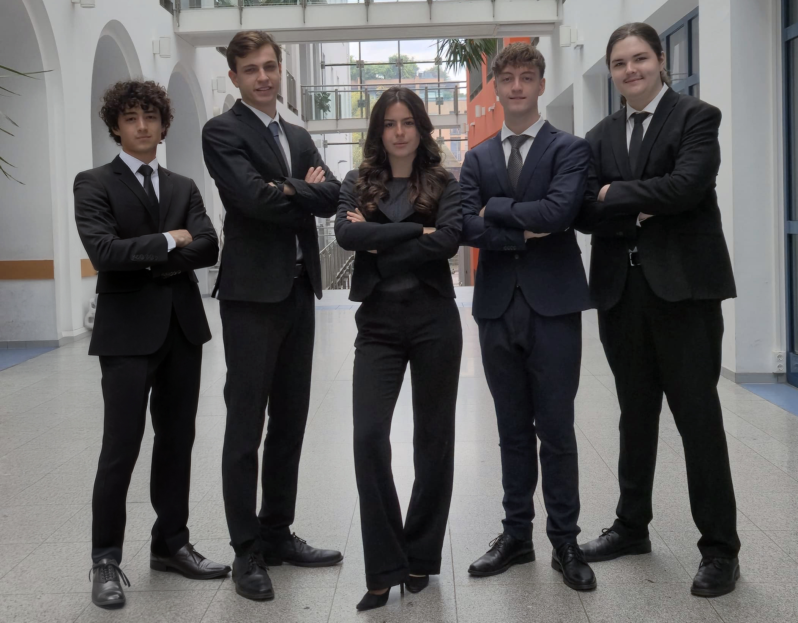

Matryoshka
Schicht für Schicht zur Sicherheit
Angriffe auf einen Blick
Die interaktive Weltkarte sammelt die Angriffsszenarien dieser Diplomarbeit und ausgewählte Angriffe früherer Gruppen. Ein Klick auf einen Knoten öffnet Details zu OSI-Layer, Kategorie, Protokoll und Schweregrad.
Ziehen dreht den Globus, Scrollen zoomt, ein Klick öffnet die Detailkarte.
In neuem Tab öffnen ↗Angreifen, verstehen, absichern
Matryoshka simuliert mehrschichtige Cyberangriffe in einer vollständig isolierten Testumgebung. Jedes Teammitglied bearbeitet vier Angriffsszenarien: Zuerst wird der Angriff gezielt durchgeführt und die Schwachstelle dokumentiert (Red Team), anschließend werden Gegenmaßnahmen entworfen, implementiert und gegen denselben Angriff erneut getestet (Blue Team).
Alle Angriffe, Analysen und Schutzmaßnahmen werden laufend in einer gemeinsamen Projektdokumentation festgehalten. Ziel ist ein belastbares Verständnis realer Angriffsmethoden und wirksamer Verteidigungsstrategien in modernen Netzwerken.
Fünf Schwerpunkte, ein Netzwerk
Jede Person verantwortet einen eigenen Themenbereich innerhalb der gemeinsamen Testumgebung.
